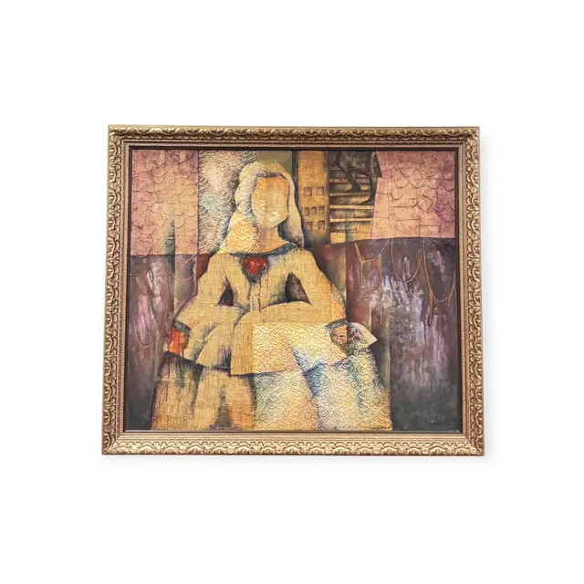
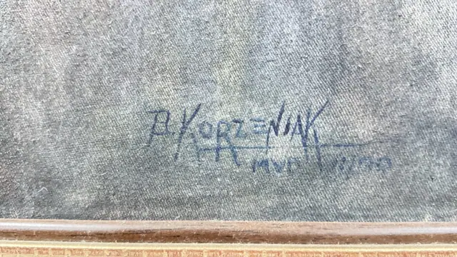
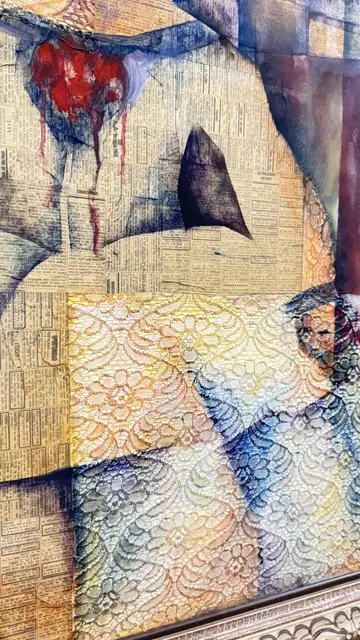
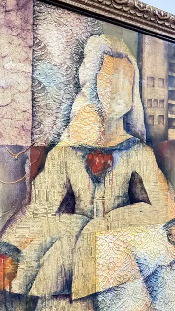
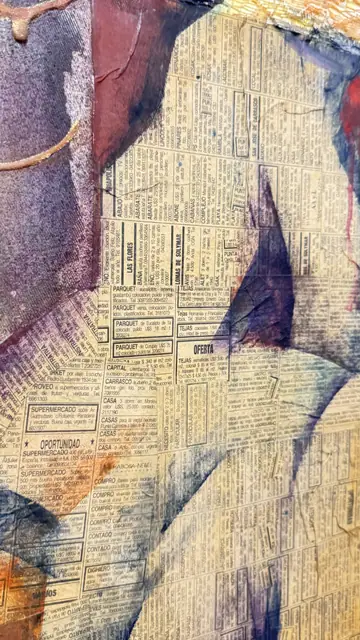
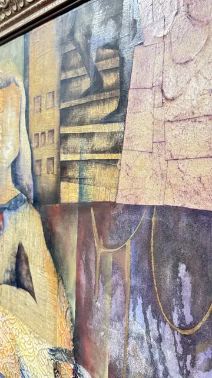
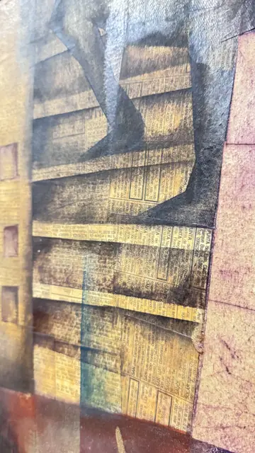
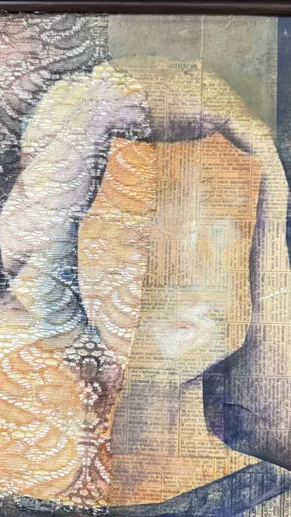
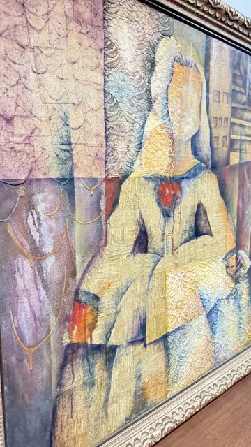

Paintings & Prints
Seated Woman Collage, Montevideo, P. KORZENIAK, Signed, Framed, 1999
P. KORZENIAK · 1999
Price Upon Request









About the Item
P. KORZENIAK. A large mixed-media panel in which a hieratic, faceless seated woman fills the centre, her robe and the architecture around her collaged from real Spanish-language newspaper classified pages. Washes of dusty rose, mauve, slate blue and ochre float over the printed sheets, with a small scarlet heart at the figure's breast and stepped city blocks and windows drawn behind her. Textured lace and doily papers are embedded in the drapery, and thin ink lines describe a necklace and the edges of the buildings. The palette is muted and chalky throughout, with the newsprint reading as warm tan. Medium: mixed media, newspaper collage with paint and wash on canvas. Signed upper area of the composition, in blue, reading "P. KORZENIAK MVD 11/99". Inscribed on the reverse or mount: P. KORZENIAK; MVD 11/99; OPORTUNIDAD; SUPERMERCADO. Condition: Collaged newsprint is toned and shows fine surface crazing and small creases where the paper was laid down; frame gilding is rubbed with the red bole exposed in places. No tears or lifting seen.
Details
- Creator:
- P. KORZENIAK
- Creation Year:
- 1999
- Dimensions:
- Height: 39.25 in (99.7 cm)
Width: 44.75 in (113.67 cm)
outside of frame - Medium:
- mixed media, newspaper collage with paint and wash on canvas
- Period:
- 20Th
- Condition:
- Offered in the condition shown in the photographs.
- Reference Number:
- VO-69
- Documentation:
- no certificate photographed
- Gallery Location:
- P. KORZENIAK; MVD 11/99; OPORTUNIDAD